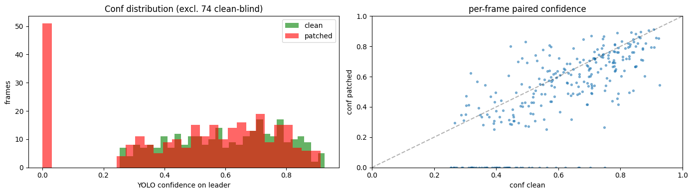
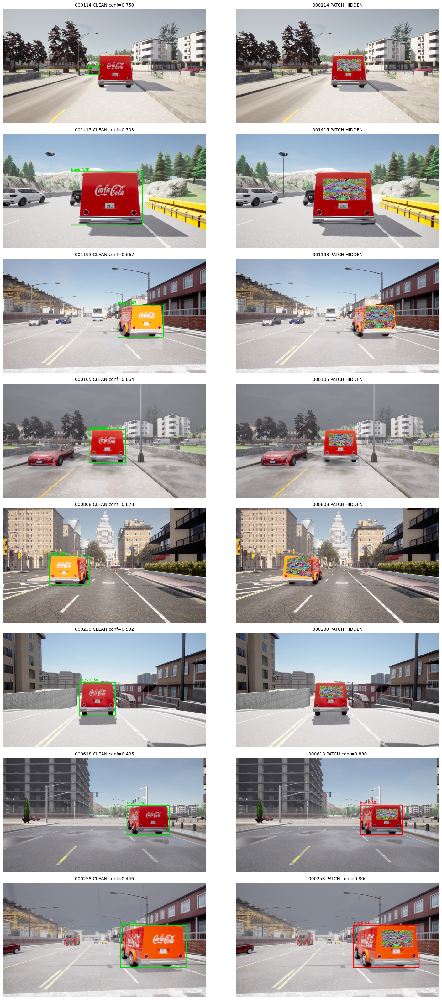

Patch: experiments/yolo_attack/run02_20260609_093207/patch_final.pt
Marker dataset: data/chroma_key_dataset/capture_20260609_014138_marker
Clean dataset (true baseline): data/chroma_key_dataset/capture_20260609_014138_clean
YOLO weights: src/vehicle_counting_model/yolov8n.pt
Target bbox expand: 2.5
| val frames total | 358 |
| leader visible in clean | 284 (79.3%) |
| already blind in clean (excluded) | 74 (20.7%) |
| — on visible-in-clean only — | |
|---|---|
| mean conf clean | 0.6030 |
| mean conf with patch | 0.4895 |
| absolute delta | -0.1135 |
| relative delta | -18.83% |
| detections lost (visible→hidden) | 51/284 (18.0%) |
| — including blind frames — | |
| det rate clean (all) | 79.3% |
| det rate patched (all) | 65.9% |
| class | clean | patched |
|---|---|---|
| <HIDDEN> | 0 | 51 |
| bus | 34 | 75 |
| car | 48 | 53 |
| truck | 202 | 105 |

